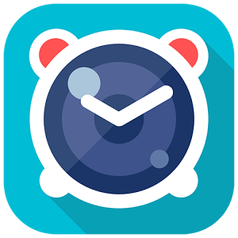
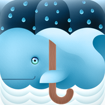
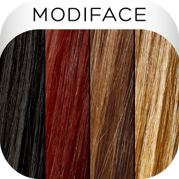
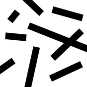
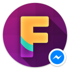
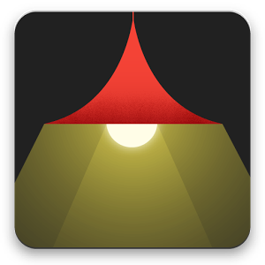
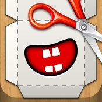
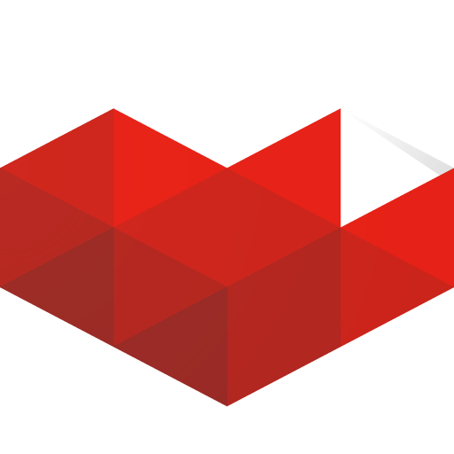
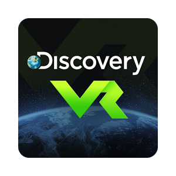
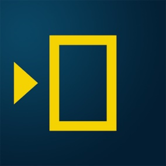

Round Icons
Graphic Design
Приложения за забавление
Забавление, разпускане, губене на време, наслада за сетивата. Тук сме събрали всичко необходимо, с което можете да се позабавлявате, независимо дали сте сами или с компания. Това са приложенията, които си заслужава да свалите.
Live GIF (iOS)
От Priime, Inc.
С новите iPhone 6s и 6s Plus вие можете да правите т.нар. живи снимки (Live Photos), а сега с приложението Live GIF ще можете да споделяте тези живи снимки като GIF файлове и видеоклипове! Разширете вашата креативност, споделяйте с Facebook, iMessage, Twitter, Email, Instagram и други. Live GIF е създадено, за да бъде бързо и удобно - без регистрация, трябва просто да отворите вашите живи снимки и да ги споделите.
Цена: 1,99 долара
Изтегли приложението от App Store
Харесай Добави в любими
Create A New Face (Windows)
От Hde 7 Software
Create A New Face е интуитивно и лесно за използване приложение за промяна на лица. Създавайте забавни лица от вашите снимки, снимки на вашите приятели и др. За тази цел са достъпни 1350+ красиви висококачествени обекти в различни категории - очи, очила, маски, мустаци, шапки, белези и много повече! Освен това можете да настройвате цветовете, яркостта, контраста, наситеността и гамата. Създаването на ново лице е лесно. Наистина лесно. Тайната идва от естествения и интуитивен дизайн и Auto Zoom функцията за точно позициониране на обектите, за да изглеждат снимките реални.
Цена: Безплатно
Изтегли приложението от Windows Store
Харесай Добави в любими

Snap Me Up (Android)
От Dehun
Чудили ли сте се как изглеждате в момента на събуждане? Snap Me Up ви позволява да задавате аларми по лесен и елегантен начин. Тези аларми трябва да бъдат изключени, като направите снимка на лицето си. Просто погледнете в камерата и готово! Вашите снимки ще бъдат записани в един албум, наречен: My sleepy snaps, където можете да ги разгледате или споделите. Най-новата функция включва и видео: събудете се с 8-секундно видео и го споделете с приятелите си или просто го гледайте в галерията.
Цена: Безплатно (Предлага покупки в приложението)
Изтегли приложението от Google Play Store
Харесай Добави в любими

Waterlogue (iOS)
От Tinrocket, LLC
Вижте света като художник! Не е нужно да се цапате с боя, за да създавате красиви акварелни образи. Waterlogue улавя същността на вашите снимки в блестящи, течни цветове. Waterlogue ще трансформира вашите снимки в светещи акварели. Запаметете акварелите и ги споделете в Instagram, Twitter, Facebook и Tumblr.
Цена: Безплатно (Предлага покупки в приложението)
Изтегли приложението от App Store
Харесай Добави в любими

Hair Color Studio (Android, iOS)
От ModiFace
Hair Color Studio ще се хареса на дамите, тъй като предоставя лесен и интуитивен начин да проверят как биха изглеждали с друг цвят на косата, преди да са пристъпили към реални действия. Всичко, което трябва да направят нежните ни половинки, е да качат своя снимка, да направят очертания на косата си, а след това да изберат различен цвят коса или да си поиграят с нюансите. След като виртуалното преобразяване е налице, може да изпратите снимките на приятелките си, да ги споделите във Facebook или да ги запаметите във вашата галерия. Опитайте!
Цена: Цена: Безплатно
Изтегли приложението от Google Play Store, App Store
Харесай Добави в любими

Tworlds - Two worlds, one moment (iOS)
От Noodlewerk
Чудили ли сте се някога, какво прави някой друг някъде по света точно в този момент? Tworlds е приложение, което ви помага да разберете това, чрез сравняване на вашето ежедневие анонимно със случаен непознат. Това е забавна социална конкуренция. Кой има най-хубав изглед, докато пие сутрешното си кафе? Какво прави някой друг в обедната си почивка? Къде обичате да релаксирате след работа? Кой е тъжен? Кой е ядосан? Кой не може да заспи вечер?... Просто напишете ключова дума в Tworlds и намерете съмишленици. Така ще придобиете чувство на свързаност с останалата част от света. Споделете мига в Tworlds!
Цена: Безплатно (Предлага покупки в приложението)
Изтегли приложението от App Store
Харесай Добави в любими

FlipLip Voice Changer (Android, iOS)
От Happy Bits
Както говори името на това Messenger приложение, вие ще бъдете в състояние да запишете гласа си и след това да го промените, за да звучите като киборг, мачо, русалка, робот, човек, надишал се с хелий, и т.н. Как работи?
- Запишете гласово съобщение
- Изберете гласов филтър (опитайте всеки от тях!)
- Изпратете с Messenger на приятел
- Забавлението е гарантирано.
Цена: Безплатно (Предлага покупки в приложението)
Изтегли приложението от Google Play Store, App Store
Харесай Добави в любими

Google Spotlight Stories (Android)
От Google Inc
Потопете се в един свят, в който се разказват истории, направени само за мобилни устройства. Инженери и режисьори създават истории за живота, като използват най-новите постижения в областта на мобилните технологии. Използването на 3D и 2D анимации, 360-градусово видео, съраунд звук и сензорни техники карат една история да се разгърне пред вас. Обещаваме ви, че Google Spotlight ще се превърне във вашето любимо мобилно кино.
Цена: Безплатно (Предлага покупки в приложението)
Изтегли приложението от Google Play Store
Харесай Добави в любими

Foldify - Create, Print, Fold (iOS)
От Pixle
Нарисувайте, създайте, отпечатайте и сгънете красиви 3D фигурки с Foldify. Спокойно, няма нужда да имате уменията на истински художник, защото Foldify има тонове безплатно съдържание, с което можете да създадете невероятни фигури!
Цена: $3,99
Изтегли приложението от App Store
Харесай Добави в любими
Baldify - Go Bald (Android, iOS, Windows)
От Apptly
Baldify ще ви накара да оплешивеете. Това Windows Phone приложение ще ви даде възможност да си поиграте с плешивостта си и да покажете резултата на всички, за да се посмеете заедно. Baldify не само ускорява загубата на коса, но също така ви позволява да видите себе си плешив по многобройни забавно реалистични начини. Изпращайте снимките чрез Skype, Viber, Instagram, Twitter, Facebook, MMS, YouTube, Email, Gmail и др. (В зависимост от това, какви приложения сте инсталирали на вашия телефон.)
Цена: 1,89 лв.
Изтегли приложението от Google Play Store, App Store, Windows Store
Харесай Добави в любими

YouTube Gaming (Android, iOS)
От Google Inc.
YouTube Gaming приложението за Android и iOS ще ви държи свързани с игрите, играчите и гейминг културата. Гледайте клипове и предавания на живо с опция за чат - включително ревюта, игри на скорост, трейлъри и още от любимите ви геймъри и издатели на игри. Наслаждавайте се на игрите навсякъде и по всяко време - Minecraft, Grand Theft Auto, League of Legends, Call of Duty и още десетки хиляди, увеличаващи се всеки ден. YouTube Gaming ви очаква!
Цена: Безплатно (Предлага покупки в приложението)
Изтегли приложението от Google Play Store, App Store
Харесай Добави в любими
JibJab for Messenger (Android, iOS)
От JibJab Bros. Studios
JibJab за Messenger е може би най-забавното GIF приложение, създавано досега. Изберете сцена от JibJab, поставете лицето си в посочените празни места и наблюдавайте как ще правите невероятно смешни неща. Уверяваме ви, че хората, които ще получат вашите JibJab съобщения, ще се превиват от смях.
Цена: Безплатно
Изтегли приложението от Google Play Store, App Store
Харесай Добави в любими

Discovery VR (Android, iOS)
От Discovery Communications
Присъединете се към най-новото приключение във виртуалната реалност и опознавайте света с Discovery VR. В тази растяща колекция от динамични 360-градусови видео преживявания ще намерите ексклузивни клипове на любимите си предавания по тв канала. Можете да се насладите на 3D изживяване със или без Google Cardboard и Samsung Gear.
Цена: Безплатно
Изтегли приложението от App Store, Google Play Store
Харесай Добави в любими
TwinsOrNot (Windows)
От Microsoft Online
TwinsOrNot е официалното приложение на Microsoft, което ще ви забавлява с опцията да намерите своя „брат“ близнак. Или пък просто вижте колко си приличате с известна знаменитост. TwinsOrNot се захранва от Microsoft Project Oxford, бета-версия на набор от APIs, SDKs и услуги свободно достъпни за разработчиците. Услугата вече има интеграция с Bing, за да е по-лесно за вас да намерите снимки в интернет.
Цена: Безплатно
Изтегли приложението от Windows Store
Харесай Добави в любими
ToonsTV: Angry Birds video app (Android, iOS)
От Rovio Entertainment Ltd
Свалете, седнете и се насладете на приключенията на любимите ви птици и свине в Angry Birds Toons - сега в собственото мобилно приложение. ToonsTV е дом и на много други страхотни анимационни филмчета, които преди това можехме да гледаме в самото приложение на Angry Birds. Забавленията за деца и възрастни е гарантирано. Пригответе се за най-забавните приключения на любимите ви пернати приятели в Angry Birds Toons и техните врагове прасетата. Всяка седмица ще се добавят нови епизоди. Кажете на приятелите си за любимите ви епизоди, като споделяте съдържание в социалните мрежи. Наличността на съдържанието зависи от държавата.
Цена: Безплатно (Предлага покупки в приложението)
Изтегли приложението от App Store, Google Play Store
Харесай Добави в любими

Nat Geo Play (Android)
От Fox International Channels (UK) Ltd.
С Nat Geo Play можете да гледате най-доброто от National Geographic Channel и Nat Geo Wild, когато и където пожелаете. Nat Geo Play е безплатна услуга за абонати на платена телевизия на отделни оператори. Проверете дали е налична за вашия пакет. Насладете се на предавания, филми и ексклузивно съдържание по всяко време: Brain Games, Car SOS, Explore Bulgaria, Теория на глупостта и др. Тук ще откриете още класически заглавия като Да убиеш Линкълн, Космос, Големите миграции и др. Проверете специалните издания, посветени на знакови световни събития. Основни функционалности:
- Гледайте цели епизоди от любимите си предавания и наваксайте, ако сте пропуснали
- Продължете да гледате от там, от където сте спрели. Синхронизиране между отделните устройства
- Напомнете си за нов епизод от предаването, който следите
- Създавайте профили и настройте родителски контрол
- Споделете с приятели това, което гледате, по имейл или през социалните мрежи
- Винаги бъдете информирани за епизодите, които изтичат
Цена: Безплатно
Изтегли приложението от Google Play Store
Харесай Добави в любими
Gong Play (Android)
От „Нет Инфо” АД
Спортът – навсякъде с вас! Gong Play е платена платформа за онлайн излъчване на спортни събития, създадена за вас – феновете на спорта. Вие можете да гледате:
- А група на Българското футболно първенство
- Английската Висша лига
- Capital One Cup
- FA Cup
- Sky Bet Championship
- Европейски квалификации 2016 (без срещите на националния отбор на България)
- NBA
- Боксови галавечери
- Формула 1
- И още спортни събития!
Приложението е идеално за динамичните хора, които не искат да пропускат нито едно спортно събитие и искат да гледат представянията на любимите си отбори и спортисти. Приложението Gong Play ви позволява да гледате стрийма в HQ. Моля, проверете с вашия интернет доставчик дали скоростта и свързаността му могат да поемат подобен капацитет.Приложението Gong Play ви предлага лесно заплащане – чрез абонаментни планове, платими чрез вашия акаунт за разплащане на мобилния ви телефон. Препоръчваме да заплатите вашето спортно събитие или абонамент поне 24 часа преди първия мач, който искате да гледате. Ако платите непосредствено преди започване на мача/спортното събитие, не може да гарантираме, че системата ще обработи навреме вашето плащане и ще може да гледате безпроблемно избрания от вас мач. Можете да гледате по 6 мача от всеки кръг на А група и 6 мача от всеки кръг на Английската Висша лига и още 6 мача английски футбол. За повече информация и нови спортни събития, както и кои спортни събития ще бъдат излъчвани, вижте в Програма, тъй като са възможни промени в програмата, които не зависят от Gong Play. В чужбина можете да гледате мачовете от А група. Мачовете от Висшата лига, Capital One Cup, FA Cup, Sky Bet Championship, Евроквалификации 2016, NBA и Боксови галавечери и други спортни събития не са разрешени за гледане извън България. При промяна ще уведомяваме своевременно.
- Последно обновени: Февруари 2016
- Категория: Приложения за снимки и фотография